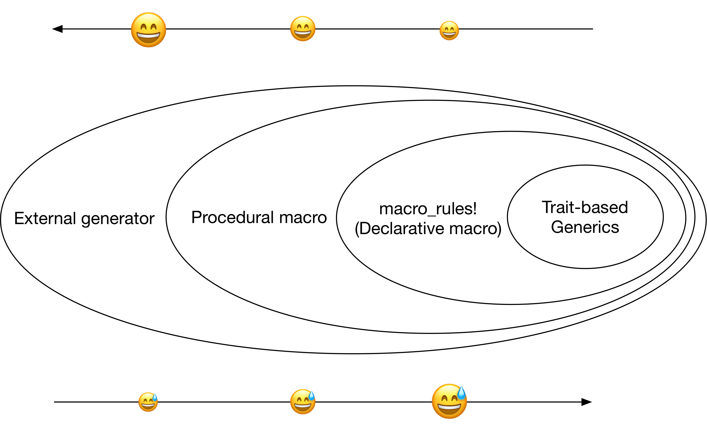
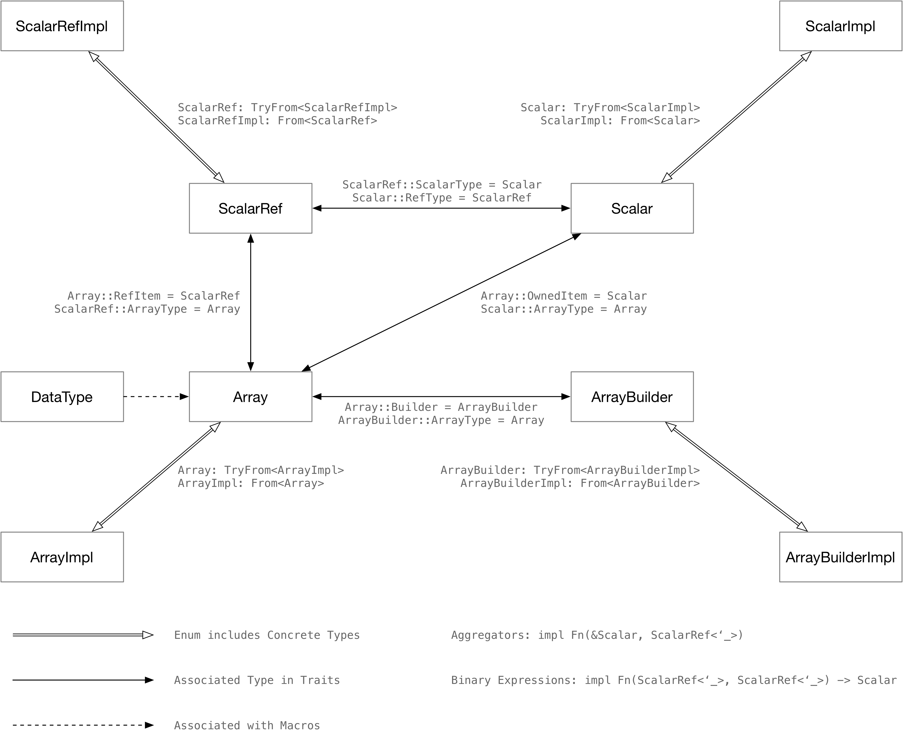
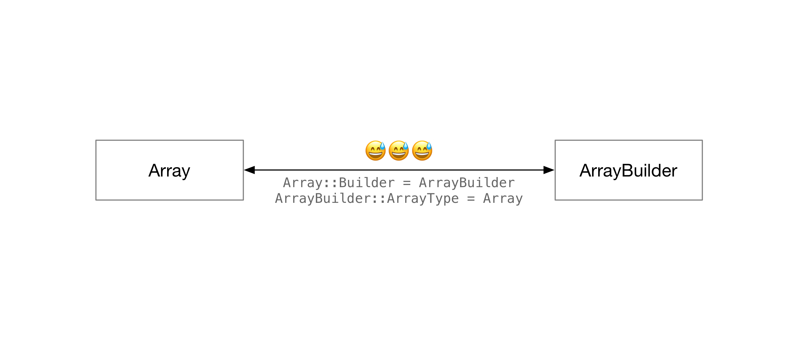
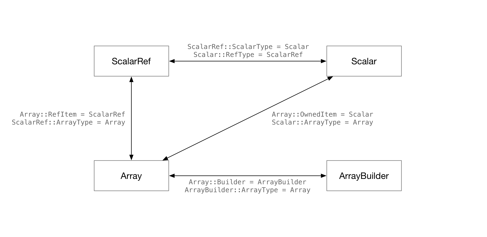
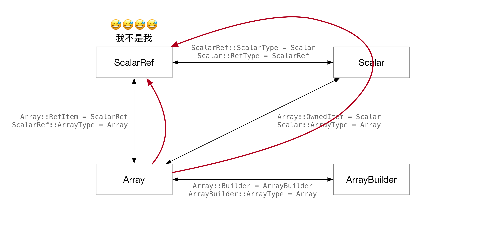

用 Rust 做类型体操 (上篇)
TL;DR: 本人前两天刚写的 type-exercise-in-rust (GitHub) 中已经包含了一整套数据库执行器的类型设计，本文将详细介绍整个设计过程中的思考过程和解决方案。
Day 0: 引入
通常来说，在 Rust 语言中可以使用 trait 来做泛型 (generics)。但由于语言的一些限制，开发者往往难以用编程语言表达自己所需的 trait。在这种背景下，开发者往往会诉诸其他工具。举个例子：
// 正常来说，开发者可以用 trait 来定义共享行为，从而实现 generics
pub fn speak(animal: impl Animal) {
println!("Hi, I'm {}", animal.identity());
}
// 由于某些原因，开发者没法给 Animal 实现 `identity`。因此，只能通过类似
// macro 的工具来生成重复代码。
pub fn speak(animal: AnimalEnum) {
generate_match_arms! { animal, identity_map }
}
// 由于某些原因，Rust 的 macro_rules 无法表达开发者所需的泛型，开发者
// 可能会选择 procedural macro 来从 AST-level 生成代码
#[generate_speak]
pub fn speak(animal: AnimalEnum) {
// 里面的内容会被过程宏替换掉
todo!()
}
// 最终，开发者发现不管怎么样都没法使用 Rust 语言表达所需的泛型，选择使
// 用外部工具生成代码。这种操作俗称摆烂。
pub fn generate_code() -> Result<()> {
std::fs::write("animal.rs", format!("
pub fn speak(animal: AnimalEnum) {{
{generated_code}
}}
", generated_code = generate_code_for_animal()))
}
从方法论的角度来讲，一旦开发者在某个需要使用泛型的地方使用了宏展开，调用它的代码就不可能再通过 trait-based generics 使用这段代码。从这个角度来说，越是“大道至简”的生成代码，越难维护。但反过来说，如果要完全实现 trait-based generics，往往要和编译器斗智斗勇，就算是通过编译也需要花掉大量的时间。

取得可维护性和易用性的平衡是一件困难的事情。不过在数据库系统的场景里，我们更愿意做到“一劳永逸”——数据库执行器所支持的数据类型是有限的，这一块代码往往写完之后就不会有大的改动了。为了使用这一套系统的开发者写代码写得快乐，在执行器的数据类型里做一些“类型体操”是比较合适的事情。
《用 Rust 做类型体操》系列以构造一个数据库执行器的数据类型框架为例，带开发者了解如何使用 Rust 语言的黑魔法，在 safe nightly Rust 中实现各种神奇的泛型操作，在编译期用最少的代码量生成尽可能多的调用组合，减少运行时开销。
设计目标

如上图所示，《用 Rust 做类型体操》系列围绕 Array 构造了一整套 trait 系统，从而帮助开发者更好地在这套系统上实现想要的功能。举一些例子：
统一的零开销接口
在我们的实现中，Array 是一个存储数据集合的数据结构。Array 可能实现了一些比较特殊的内存布局，导致无法取得所有权类型的引用。举例：
- 从
Vec<String>中，可以零拷贝地取得&String. - 如果使用类似 Apache Arrow 的方式存储
StringArray(offset + flat array), 则只能取得&str。
我们实现的这套 Array 抽象可以很好地表示 Array 存储的所有权类型 String 和 Array 可以获得的引用类型 &str 之间的关系。这一套接口既可以给定长类型用，也可以给变长类型用。
表达式向量化
开发者只需要实现处理单个数据的 SQL 函数，我们的框架可以直接将它展开为向量化后的函数。
pub struct ExprStrContains;
impl BinaryExprFunc<StringArray, StringArray, BoolArray> for ExprStrContains {
fn eval(&self, i1: &str, i2: &str) -> bool {
i1.contains(i2)
}
}
#[test]
fn test_str_contains() {
// 编译期将 StrContains 函数向量化
let expr = build_binary_expression(
ExpressionFunc::StrContains,
DataType::Varchar,
DataType::Char { width: 10 },
);
let i1: ArrayImpl = StringArray::from_slice(&[Some("000"), Some("111"), None]).into();
let i2: ArrayImpl = StringArray::from_slice(&[Some("0"), Some("0"), None]).into();
// 之后调用表达式直接可以传入抹掉具体类型的 `ArrayImpl`。
let result = expr.eval_expr(&[&i1, &i2]).unwrap();
}
编译期代码展开
在 OLAP 数据库系统中，用户可能会比较不同类型的数据（比如 i16 与 i64 比较，i32 和 f64 比较）。我们不可能为每一种比较都单独实现一套函数。本系列做的类型体操可以很方便地在编译期展开不同类型的比较操作。举个例子：
我们在代码里通过 macro 描述可以做比较的类型，以及比较时需要做的 cast：
macro_rules! for_all_cmp_combinations {
($macro:tt $(, $x:tt)*) => {
$macro! {
[$($x),*],
// comparison across integer types
{ int16, int32, int32 },
{ int32, int16, int32 },
{ int16, int64, int64 },
{ int32, int64, int64 },
{ int64, int16, int64 },
{ int64, int32, int64 },
// comparison across float types
{ float32, float64, float64 },
{ float64, float32, float64 },
// ...
构建表达式时，可以直接在编译时一套代码展开成几十种不同的函数：
pub fn build_binary_expression(
f: ExpressionFunc,
i1: DataType,
i2: DataType,
) -> Box<dyn Expression> {
match f {
CmpLe => for_all_cmp_combinations! { impl_cmp_expression_of, i1, i2, ExprCmpLe },
// ...
}
}
您可以在 type-exercise-in-rust 中围观使用整个系统的实现。
Day 1: Array 与 ArrayBuilder

如果您想直接看最终实现，可以直接跳转到 Day 1 对应的源代码.
目标
数据库表达式向量化执行的过程写成伪代码大概是这样：
fn eval_binary(i1: InputArray, i2: InputArray) -> OutputArray {
let mut builder = OutputArray::Builder::new();
for (i1, i2) in i1.iter().zip_eq(i2.iter()) {
builder.push(sql_func(i1, i2));
}
builder.finish()
}
注意 OutputArray::Builder::new()：如果需要实现类似于上面代码的泛型 eval_bianry，我们的类型框架就要支持从 Array 推导出 ArrayBuilder 的类型。
因此，本文就介绍如何实现 Array 和 ArrayBuilder 这一对 trait，从而写出 eval_binary 函数体的前两行。涉及到的知识点有：
- Associated Type
- Generic Associated Type
实现 PrimitiveArray 与 StringArray
在这个系列中，我们会实现一套类似于 Apache Arrow 内存布局的数组结构。Array 是 Option<T> 的集合。存储定长类型的 Array 叫 PrimitiveArray。这种数据如果用 Vec<Option<T>> 存储，每个 Option<T> 所需要的内存是 mem::size_of::<T>() 加上 Option 一个 bit 的开销。这个 bit 由于内存对齐的原因，往往会和 T 一样大。举例：
assert_eq!(std::mem::size_of::<u64>(), 8);
assert_eq!(std::mem::size_of::<Option<u64>>(), 16);
诸如 Apache Arrow 的存储可以大大优化 bitmap 所需要的空间。PrimitiveArray 使用一个 bitmap 来标识某个位置的元素是 None 还是有东西，用 Vec<T> 存储每一个位置的值，把 bitmap 和具体数据分开，以减少内存对齐的开销。
PrimitiveArray 对于所有基本类型的实现几乎是一致的，所以我们可以直接用泛型来实现它。PrimitiveType 是我们自己定义的一个 trait。
pub struct PrimitiveArray<T: PrimitiveType> {
/// The actual data of this array.
data: Vec<T>,
/// The null bitmap of this array.
bitmap: BitVec,
}
impl PrimitiveArray<T> {
fn get(&self, idx: usize) -> Option<T> {
if self.bitmap[idx] {
Some(self.data[idx])
} else {
None
}
}
fn len(&self) -> usize {
self.data.len()
}
}
Apache Arrow 对于 StringArray 的存储也有一定的优化。数据库系统往往会顺序扫描一个 Array 里面所有的 String。如果使用 Vec<Option<String>> 来存储字符串的集合，有两个问题：
- 写入
Vec<Option<String>>必须要创建一个String对象，会有内存分配的开销。在数据库的场景中，开发者往往希望能直接把网络中接收到的数据、或存储里读出来的磁盘页Vec<u8>零开销地转换成一个StringArray；而不是把Vec<u8>拷一遍转换成很多很多String。 - 连续读取一个
Vec<Option<String>>里面的String可能对缓存不友好。String是一个指针，散落在内存里的各个地方，遍历Vec<Option<String>>的过程反映到内存读取上可能是东读一块，西读一块，随机读。
综上所述，StringArray 应该把 String 紧凑地存在一起。在 Apache Arrow 中，StringArray 分为三个部分：一个平摊的字符数组，一个记录 offset 的数组，以及一个 bitmap。比如，StringArray 中包含 233, abc, null 三个数据，它会以这种方式存在内存里：
data: 233abc
^ ^ ^
| | |--|
offsets: 0, 3, 6, 6
bitmap: true, true, false
这样一来，整个 StringArray 所对应的数据在内存里就连续了。
pub struct StringArray {
/// The flattened data of string.
data: Vec<u8>,
/// Offsets of each string in the data flat array.
offsets: Vec<usize>,
/// The null bitmap of this array.
bitmap: BitVec,
}
impl StringArray {
fn get(&self, idx: usize) -> Option<&str> {
if self.bitmap[idx] {
let range = self.offsets[idx]..self.offsets[idx + 1];
Some(unsafe { std::str::from_utf8_unchecked(&self.data[range]) })
} else {
None
}
}
开发者需要使用 PrimitiveArrayBuilder 构造 PrimitiveArray，使用 StringArrayBuilder 构造 StringArray。构造的过程和读取差不多，在这里就不赘述了，有兴趣可以直接看代码或者自己实现。
实现 Array trait
Array trait 囊括了整个系统中所有的 Array – PrimitiveArray, StringArray。先试着写一下它的声明：
/// [`Array`] is a collection of data of the same type.
pub trait Array: Send + Sync + Sized + 'static {
/// The reference item of this array.
type RefItem;
/// Retrieve a reference to value.
fn get(&self, idx: usize) -> Option<Self::RefItem>;
/// Number of items of array.
fn len(&self) -> usize;
/// Indicates whether this array is empty
fn is_empty(&self) -> bool {
self.len() == 0
}
}
然后尝试给 PrimitiveArray 和 StringArray 实现这个 trait。
impl<T: PrimitiveType> Array for PrimitiveArray<T> {
type RefItem = T;
// ...
}
impl Array for StringArray {
type RefItem = &str;
// ...
}
接下来就出现了一些大问题：
error[E0106]: missing lifetime specifier
--> archive/day1/src/array/string_array.rs:29:20
|
29 | type RefItem = &str;
| ^ expected named lifetime parameter
|
help: consider introducing a named lifetime parameter
|
29 | type RefItem<'a> = &'a str;
| ++++ ++
&str 写在关联类型中需要一个生命周期！照着编译器的提示加上生命周期。
impl Array for StringArray {
type RefItem<'a> = &'a str;
error[E0658]: generic associated types are unstable
--> archive/day1/src/array/string_array.rs:29:5
|
29 | type RefItem<'a> = &'a str;
| ^^^^^^^^^^^^^^^^^^^^^^^^^^^
|
= note: see issue #44265 <https://github.com/rust-lang/rust/issues/44265> for more information
= help: add `#![feature(generic_associated_types)]` to the crate attributes to enable
又一次无情被编译器打脸，编译器说要开启 “generic associated types” (GAT)，这是个啥？
trait 里面的 associated type 的声明，通常来说不能再有第二层 generic parameter。举例：
pub trait Array: Send + Sync + Sized + 'static {
/// The reference item of this array.
type RefItem<T>;
这个 <T> 就叫 GAT，它既可以是一个具体的类型，也可以是我们这边需要的 lifetime。所以，开启 GAT 之后，就可以在这里表达 Array 对应的 RefItem 可以是 'a 生命周期的东西了。更新一下 Array 的定义：
/// [`Array`] is a collection of data of the same type.
pub trait Array: Send + Sync + Sized + 'static {
/// Type of the item that can be retrieved from the [`Array`]. For example, we can get a `i32`
/// from [`Int32Array`], while [`StringArray`] produces a `&str`. As we need a lifetime that is
/// the same as `self` for `&str`, we use GAT here.
type RefItem<'a>: Clone + Copy + std::fmt::Debug;
/// Retrieve a reference to value.
fn get(&self, idx: usize) -> Option<Self::RefItem<'_>>;
// ...
}
impl Array for StringArray {
/// For [`StringArray`], we can only get an `&str` out of it with zero overhead.
type RefItem<'a> = &'a str;
// ...
}
impl<T: PrimitiveType> Array for PrimitiveArray<T> {
/// For `PrimitiveType`, we can always get the value from the array with little overhead.
/// Therefore, we do not use the `'a` lifetime here, and simply copy the value to the user when
/// calling `get`.
type RefItem<'a> = T;
// ...
}
这样，我们就可以在 get 函数的签名里用 -> Option<Self::RefItem<'_>> 来表达：Array 里面可以拿到和 self 生命周期相同的引用了。
有的朋友可能要问了，为啥这里要用 GAT，没有别的解法吗？
当然有！
解法 1：修改 PrimitiveArray 的实现，使用 ?Sized bound
现在的实现中，我们希望 PrimitiveArray 返回 Option<i32> 而非 Option<&i32>。有的 Array 返回的东西是有生命周期的，有的没有。第一种解法就是把它们统一，不论是 StringArray 还是 PrimitiveArray 都返回 Option<&T>。
这样一来，我们就可以这样修改 Array 的定义：
pub trait Array: Send + Sync + Sized + 'static {
type RefItem: ?Sized;
/// Retrieve a reference to value.
fn get(&self, idx: usize) -> Option<&Self::RefItem>;
}
impl Array for StringArray {
type RefItem = str;
}
impl<T: PrimitiveType> Array for PrimitiveArray<T> {
type RefItem = T;
}
这样就可以在 trait 里面表达“get 返回的 Self::RefItem 拥有 Self 的生命周期”了。
这个做法现在在 RisingLight 里面用到，相对来讲还是比较好用的。不过考虑到未来还有可能存类似于 Json 的不定长数据 (TiKV Coprocessor 里面就有 Json 类型)，但 Json 可能并没有 str 这样的 !Sized type 来表示不定长的数据：
pub struct Json {
ty: JsonType, // Number, String, Array, ...
data: Vec<u8>
}
pub struct JsonRef<'a> {
ty: JsonType, // Number, String, Array, ...
data: &'a [u8]
}
在这个场景下，就没有办法使用 ?Sized bound 绕过 GAT 的问题了。
解法 2：给 Array 带上生命周期。
我们刚刚碰到的根本问题是：Array trait 里面没有一个生命周期，但 get 返回的东西需要一个生命周期。
我们完全可以把 Array 实现在所有 Array 的引用上，而非 Array 本身。举例：
pub trait ArrayRef<'a>: Send {
type RefItem: 'a;
/// Retrieve a reference to value.
fn get(&self, idx: usize) -> Option<Self::RefItem>;
// ...
}
impl <'a> ArrayRef<'a> for &'a StringArray {
type RefItem = &'a str;
}
这样也可以完美解决这个问题。不过这样一来，generics function 都没法实现在有 ownership 的 Array 上面了，感觉有些奇怪，所以这个系列没这么做。
实现 ArrayIterator
有了 GAT 之后，实现 ArrayIterator 也非常简单了。现在我们对不同类型的 Array 都统一了 Array trait，因此所有 Array 可以用同一套 Iterator 实现。
/// An iterator that iterators on any [`Array`] type.
pub struct ArrayIterator<'a, A: Array> {
array: &'a A,
pos: usize,
}
impl<'a, A: Array> Iterator for ArrayIterator<'a, A> {
type Item = Option<A::RefItem<'a>>;
fn next(&mut self) -> Option<Self::Item> {
if self.pos >= self.array.len() {
None
} else {
let item = self.array.get(self.pos);
self.pos += 1;
Some(item)
}
}
}
impl<'a, A: Array> ArrayIterator<'a, A> {
/// Create an [`ArrayIterator`] from [`Array`].
pub fn new(array: &'a A) -> Self {
Self { array, pos: 0 }
}
}
impl Array for StringArray {
// ...
fn iter(&self) -> ArrayIterator<Self> {
ArrayIterator::new(self)
}
}
impl<T: PrimitiveType> Array for PrimitiveArray<T> {
// ...
fn iter(&self) -> ArrayIterator<Self> {
ArrayIterator::new(self)
}
}
实现 ArrayBuilder trait
我们给 Array 加上 Builder 这个 associated type，然后修改各个实现：
/// [`ArrayBuilder`] builds an [`Array`].
pub trait ArrayBuilder {
/// The corresponding [`Array`] of this [`ArrayBuilder`].
///
/// Here we use associated type to constraint the [`Array`] type of this builder, so that
/// `Self::Array::Builder == Self`. This property is very useful when constructing generic
/// functions, and may help a lot when implementing expressions.
type Array: Array;
/// Create a new builder with `capacity`.
fn with_capacity(capacity: usize) -> Self;
/// Append a value to builder.
fn push(&mut self, value: Option<<Self::Array as Array>::RefItem<'_>>);
/// Finish build and return a new array.
fn finish(self) -> Self::Array;
}
pub trait Array: Send + Sync + Sized + 'static {
/// The corresponding [`ArrayBuilder`] of this [`Array`].
type Builder: ArrayBuilder;
// ...
}
impl<T: PrimitiveType> Array for PrimitiveArray<T> {
type Builder = PrimitiveArrayBuilder<T>;
// ...
}
impl Array for StringArray {
type Builder = StringArrayBuilder;
// ...
}
于是非常轻松地通过了编译，成功近在眼前，回过来实现一下本文刚开始想做的事情，除了中间那个 .push：
fn eval_binary<I: Array, O: Array>(i1: I, i2: I) -> O {
assert_eq!(i1.len(), i2.len(), "size mismatch");
let mut builder = O::Builder::with_capacity(i1.len());
for (i1, i2) in i1.iter().zip(i2.iter()) {
// builder.push(sql_func(i1, i2));
}
builder.finish()
}
编译器无情打脸：
error[E0308]: mismatched types
--> archive/day1/src/array.rs:79:9
|
73 | fn eval_binary<I: Array, O: Array>(i1: I, i2: I) -> O {
| - this type parameter - expected `O` because of return type
...
79 | builder.finish()
| ^^^^^^^^^^^^^^^^ expected type parameter `O`, found associated type
|
= note: expected type parameter `O`
found associated type `<<O as array::Array>::Builder as array::ArrayBuilder>::Array`
= note: you might be missing a type parameter or trait bound
这是为什么捏？
仔细看一看编译器的提示信息，发现这么一句：
= note: expected type parameter `O`
found associated type `<<O as array::Array>::Builder as array::ArrayBuilder>::Array`
编译器在这个泛型函数里没法证明 O::Builder::finish 的返回值就是 O。
所以我们要修改一下 trait 的声明，把 Array 和 ArrayBuilder 里面的 associated type 关联起来，让编译器知道：Array 的 Builder 的 Array 还是我自己。
pub trait Array: Send + Sync + Sized + 'static {
type Builder: ArrayBuilder<Array = Self>;
// ..
}
pub trait ArrayBuilder {
type Array: Array<Builder = Self>;
// ...
}
于是，编译通过，day 1 结束了！
Day 2: Scalar 与 ScalarRef

如果您想直接看最终实现，可以直接跳转到 Day 2 对应的源代码.
目标
回到之前向量化执行的代码：
fn eval_binary<I: Array, O: Array>(i1: I, i2: I) -> O {
assert_eq!(i1.len(), i2.len(), "size mismatch");
let mut builder = O::Builder::with_capacity(i1.len());
for (i1, i2) in i1.iter().zip(i2.iter()) {
builder.push(sql_func(i1, i2));
}
builder.finish()
}
思考一下 sql_func 的函数签名应该是什么样？我们可以从 primitive type 和 string 两方面去考虑。
// 两数相加
fn sql_add(a: i32, b: i32) -> i32 { a + b }
// 字符串拼接
fn concat(a: &str, b: &str) -> String { a.to_string() + b }
我们会发现一件神奇的事情：sql_func 通常来说会接收两个引用，然后产生一个有所有权的类型，比如 String。但是，builder.push 接收的是一个引用类型 &str。
builder.push(sql_func(i1, i2).xxx() /* do some cast? */);
怎么在泛型函数里面转换这两个类型呢？这就需要我们引入新的 trait 来解决这个问题。
实现 Scalar
有了上次实现 Array 和 ArrayBuilder 的经验，我们可以用 associated type 来关联 Array 和 Scalar 两个类型。注意写 ArrayType 的 trait bound 的时候要指明“Scalar 的 Array 的 OwnedItem 是我自己”。
/// An owned single value.
///
/// For example, `i32`, `String` both implements [`Scalar`].
pub trait Scalar: std::fmt::Debug + Clone + Send + Sync + 'static {
/// The corresponding [`Array`] type.
type ArrayType: Array<OwnedItem = Self>;
}
pub trait Array: Send + Sync + Sized + 'static {
/// The owned item of this array.
type OwnedItem: Scalar<ArrayType = Self>;
}
之后给各个类型都 impl Scalar，就没什么问题了。
实现 ScalarRef
ScalarRef 表示一个 Scalar 对应的某个生命周期的引用类型。举例：
i32是Scalar, 也是ScalarRef.String是Scalar,&'a str是ScalarRef<'a>.
我们先实现 ScalarRef，然后把 Array, Scalar, ScalarRef 三者关联起来。
/// A borrowed value.
///
/// For example, `i32`, `&str` both implements [`ScalarRef`].
pub trait ScalarRef<'a>: std::fmt::Debug + Clone + Copy + Send + 'a {
/// The corresponding [`Array`] type.
type ArrayType: Array<RefItem<'a> = Self>;
/// The corresponding [`Scalar`] type.
type ScalarType: Scalar<RefType<'a> = Self>;
/// Convert the reference into an owned value.
fn to_owned_scalar(&self) -> Self::ScalarType;
}
pub trait Scalar: std::fmt::Debug + Clone + Send + Sync + 'static {
/// The corresponding [`Array`] type.
type ArrayType: Array<OwnedItem = Self>;
/// The corresponding [`ScalarRef`] type.
type RefType<'a>: ScalarRef<'a, ScalarType = Self, ArrayType = Self::ArrayType>
where
Self: 'a;
/// Get a reference of the current value.
fn as_scalar_ref(&self) -> Self::RefType<'_>;
}
/// [`Array`] is a collection of data of the same type.
pub trait Array: Send + Sync + Sized + 'static {
/// The owned item of this array.
type OwnedItem: Scalar<ArrayType = Self>;
type RefItem<'a>: ScalarRef<'a, ScalarType = Self::OwnedItem, ArrayType = Self>;
}
接着对各个类型都实现 ScalarRef，即可通过 Scalar::as_scalar_ref 将一个 OwnedType 转换为 RefType。
/// Implement [`Scalar`] for `i32`. Note that `i32` is both [`Scalar`] and [`ScalarRef`].
impl Scalar for i32 {
type ArrayType = I32Array;
type RefType<'a> = i32;
fn as_scalar_ref(&self) -> i32 {
*self
}
}
/// Implement [`ScalarRef`] for `i32`. Note that `i32` is both [`Scalar`] and [`ScalarRef`].
impl<'a> ScalarRef<'a> for i32 {
type ArrayType = I32Array;
type ScalarType = i32;
fn to_owned_scalar(&self) -> i32 {
*self
}
}
/// Implement [`Scalar`] for `String`.
impl Scalar for String {
type ArrayType = StringArray;
type RefType<'a> = &'a str;
fn as_scalar_ref(&self) -> &str {
self.as_str()
}
}
/// Implement [`ScalarRef`] for `&str`.
impl<'a> ScalarRef<'a> for &'a str {
type ArrayType = StringArray;
type ScalarType = String;
fn to_owned_scalar(&self) -> String {
self.to_string()
}
}
用 HRTB 表达 GAT 类型相同
一切都非常地顺利，于是我们来试着编译一下向量化函数：
fn sql_func<'a, I: Array, O: Array>(i1: I::RefItem<'a>, i2: I::RefItem<'a>) -> O::OwnedItem {
todo!()
}
fn eval_binary<I: Array, O: Array>(i1: I, i2: I) -> O {
assert_eq!(i1.len(), i2.len(), "size mismatch");
let mut builder = O::Builder::with_capacity(i1.len());
for (i1, i2) in i1.iter().zip(i2.iter()) {
match (i1, i2) {
(Some(i1), Some(i2)) => {
builder.push(Some(sql_func::<I, O>(i1, i2).as_scalar_ref()))
}
_ => builder.push(None),
}
}
builder.finish()
}
编译器又一次无情打脸：
error[E0308]: mismatched types
--> archive/day2/src/array.rs:85:39
|
85 | builder.push(Some(sql_func::<I, O>(i1, i2).as_scalar_ref()))
| ^^^^^^^^^^^^^^^^^^^^^^^^^^^^^^^^^^^^^^^^ expected array::Array::RefItem, found scalar::Scalar::RefType
|
= note: expected associated type `<O as array::Array>::RefItem<'_>`
found associated type `<<O as array::Array>::OwnedItem as scalar::Scalar>::RefType<'_>`
这是怎么回事捏？为什么编译器说 Array::RefItem 和 Scalar::RefType 不是一个类型呢？
回顾之前我们写的所有 trait bound：
对于 ScalarRef，我们提供的类型信息是：
type ArrayType: Array<RefItem<'a> = Self>;- ScalarRef 的 Array 的 RefItem 是我自己。
type ScalarType: Scalar<RefType<'a> = Self>;- ScalarRef 的 Scalar 是我自己。
对于 Scalar，我们提供的类型信息是：
type ArrayType: Array<OwnedItem = Self>;- Scalar 的 Array 的 OwnedItem 是我自己。
type RefType<'a>: ScalarRef<'a, ScalarType = Self, ArrayType = Self::ArrayType>- Scalar 的 RefType 的 ScalarType 是我自己
- Scalar 的 RefType 的 ArrayType 是我的 ArrayType
对于 Array, 我们提供的类型信息是：
type OwnedItem: Scalar<ArrayType = Self>;- Array 的 OwnedItem 的 Array 是我自己。
type RefItem<'a>: ScalarRef<'a, ScalarType = Self::OwnedItem, ArrayType = Self>;- Array 的 RefItem 的 ScalarType 是我的 OwnedItem，Array 的 RefItem 的 ArrayType 是我自己。
这么看了一圈，唯独缺了编译器提示的这一条信息：
note: expected associated type `<O as array::Array>::RefItem<'_>`
found associated type `<<O as array::Array>::OwnedItem as scalar::Scalar>::RefType<'_>`
我们没有证明 Array 的 RefItem 都是 Array 的 OwnedItem 的 RefType！

这个 trait bound 应该怎么写在 Array 上呢？
RefItem<'a>,RefType<'a>是一个 GATArray::RefItem<'a> == Array::OwnedItem::RefType<'a>要成立- Array 自己没有生命周期，这个
'a从哪里来？
经过一番思考，Array::RefItem<'a> == Array::OwnedItem::RefType<'a> 这个性质应该对任意生命周期都成立。因此，我们可以用 HRTB Higher-Rank Trait Bounds 来写。
pub trait Array: Send + Sync + Sized + 'static
where
for<'a> Self::OwnedItem: Scalar<RefType<'a> = Self::RefItem<'a>>,
{
/* ... */
}
这样就可以表达两个 GAT 之间的关系了。
为 PrimitiveArray 加上新的 trait bound
试着编译一下代码，又被编译器无情打脸：
error[E0271]: type mismatch resolving `<T as scalar::Scalar>::ArrayType == PrimitiveArray<T>`
--> archive/day2/src/array/primitive_array.rs:46:20
|
46 | type Builder = PrimitiveArrayBuilder<T>;
| ^^^^^^^^^^^^^^^^^^^^^^^^ expected struct `PrimitiveArray`, found associated type
|
= note: expected struct `PrimitiveArray<T>`
found associated type `<T as scalar::Scalar>::ArrayType`
= help: consider constraining the associated type `<T as scalar::Scalar>::ArrayType` to `PrimitiveArray<T>`
= note: for more information, visit https://doc.rust-lang.org/book/ch19-03-advanced-traits.html
注：Scalar 相关的编译错误其实之前就应该出现，不过为了文章的编排顺序，我们在这里和 HRTB bound 一起讲。
这个错误其实很好理解：在我们的系统里，可以有 PrimitiveArray<u8>, 可以有 PrimitiveArray<i64>，但只有后者是实现了 Array 的，前者没有。所以，在 impl PrimitiveArray<T> 的时候，也要对相关的 trait 做一些限制，只对我们支持的类型 impl。因此，要加上 Scalar 和 ScalarRef 的两个 bound。由于 Array 本身没有生命周期，因此要用 HRTB bound 表达当前 Array 产生的所有 ScalarRef 和 Scalar, Array 都有对应关系。
impl<T> Array for PrimitiveArray<T>
where
T: PrimitiveType,
T: Scalar<ArrayType = Self>,
for<'a> T: ScalarRef<'a, ScalarType = T, ArrayType = Self>,
加完之后，编译器又报了一个错：
error[E0271]: type mismatch resolving `for<'a> <T as scalar::Scalar>::RefType<'a> == T`
--> archive/day2/src/array/primitive_array.rs:51:22
|
42 | impl<T> Array for PrimitiveArray<T>
| - this type parameter
...
51 | type OwnedItem = T;
| ^ expected type parameter `T`, found associated type
|
= note: expected type parameter `T`
found associated type `<T as scalar::Scalar>::RefType<'_>`
note: required by a bound in `array::Array::OwnedItem`
--> archive/day2/src/array.rs:23:37
|
23 | for<'a> Self::OwnedItem: Scalar<RefType<'a> = Self::RefItem<'a>>,
| ^^^^^^^^^^^^^^^^^^^^^^^^^^^^^^^ required by this bound in `array::Array::OwnedItem`
...
31 | type OwnedItem: Scalar<ArrayType = Self>;
| --------- required by a bound in this
help: consider further restricting type parameter `T`
|
46 | for<'a> T: ScalarRef<'a, ScalarType = T, ArrayType = Self>, T: scalar::Scalar<RefType<'_> = T>
| ~~~~~~~~~~~~~~~~~~~~~~~~~~~~~~~~~~~~
这该怎么理解捏？
用 i32 来举例，编译器推导不出来 i32::RefType == i32 (OwnedType)。这个报错很明显和我们预想实现的不太一样：RefType 怎么可能等于 OwnedType？感觉像是报错没报对地方。
稍作思考，为什么这个地方 OwnedType 和 RefType 关联起来了？因为 i32 既是 ScalarRef, 也是 Scalar。逆向思维一下，这个报错可能实际上是由：
<i32 as Scalar>::RefType ?= i32 (Array::RefItem)`
引起的。
因此，我们只需要把 PrimitiveArray 的 for<'a> T: Scalar<RefType<'a> = T> 的 bound 就上就行了，以满足 Array 的 for<'a> Self::OwnedItem: Scalar<RefType<'a> = Self::RefItem<'a>>。
impl<T> Array for PrimitiveArray<T>
where
T: PrimitiveType,
T: Scalar<ArrayType = Self>,
for<'a> T: ScalarRef<'a, ScalarType = T, ArrayType = Self>,
for<'a> T: Scalar<RefType<'a> = T>,
{
// ...
}
PrimitiveArray 和 PrimitiveArrayBuilder 有了这四个 bound 之后，编译就能通过了。day 2 顺利结束！
欢迎在这篇文章对应的 Issue 下使用 GitHub 账号评论、交流你的想法。
《用 Rust 做类型体操 (中篇) 》已发布！如需了解，请至我的博客文章列表中找到中篇。